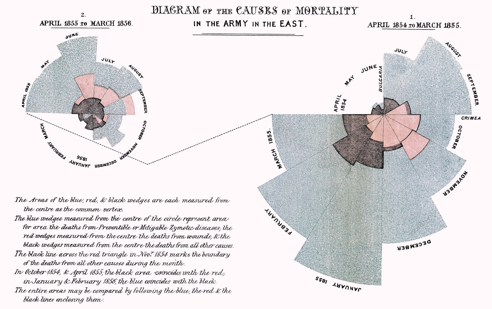
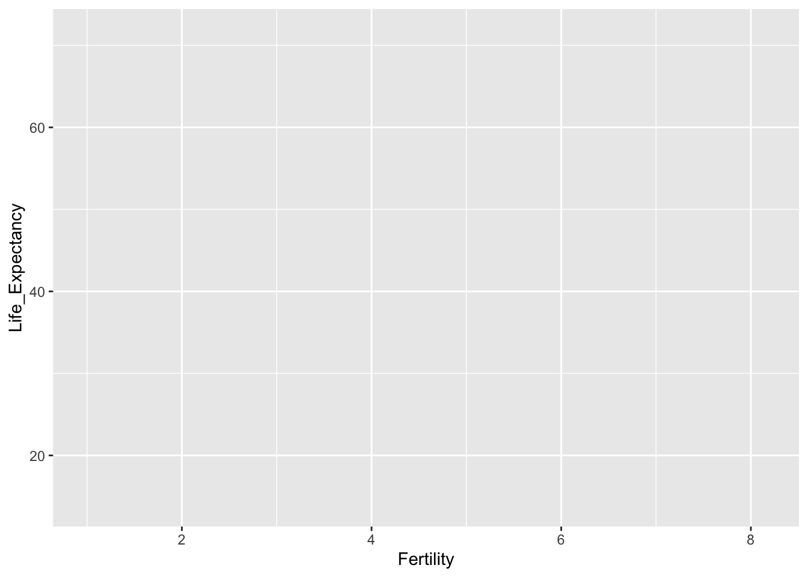
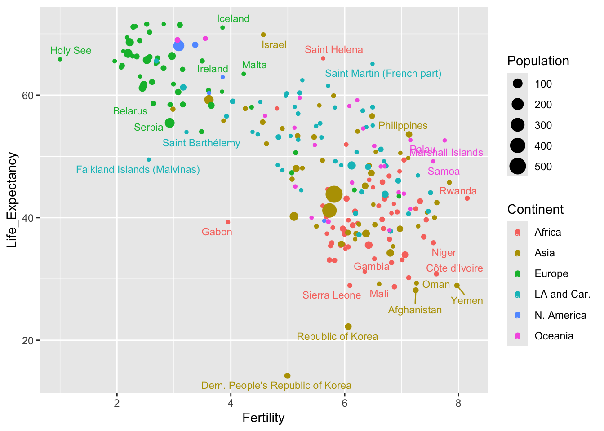
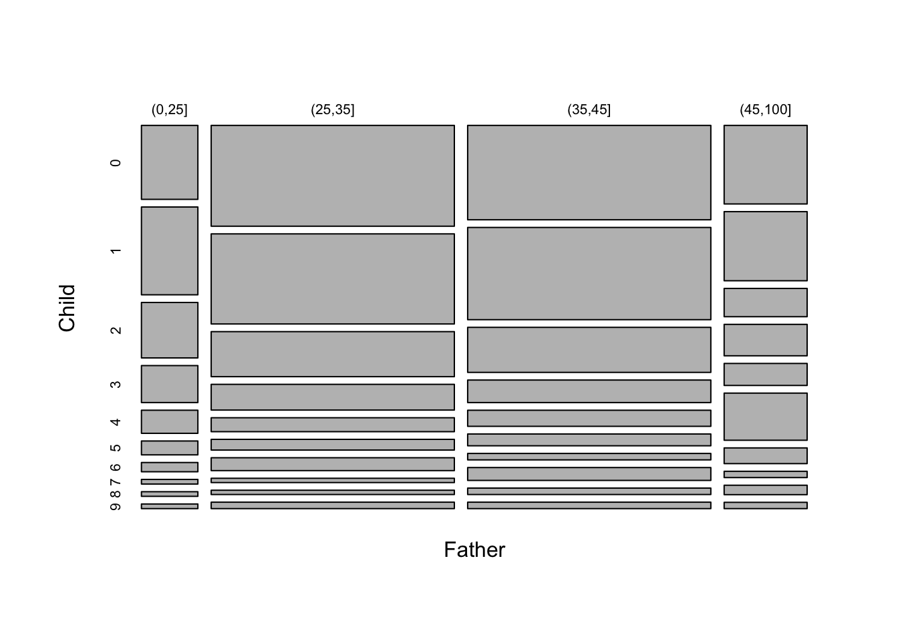
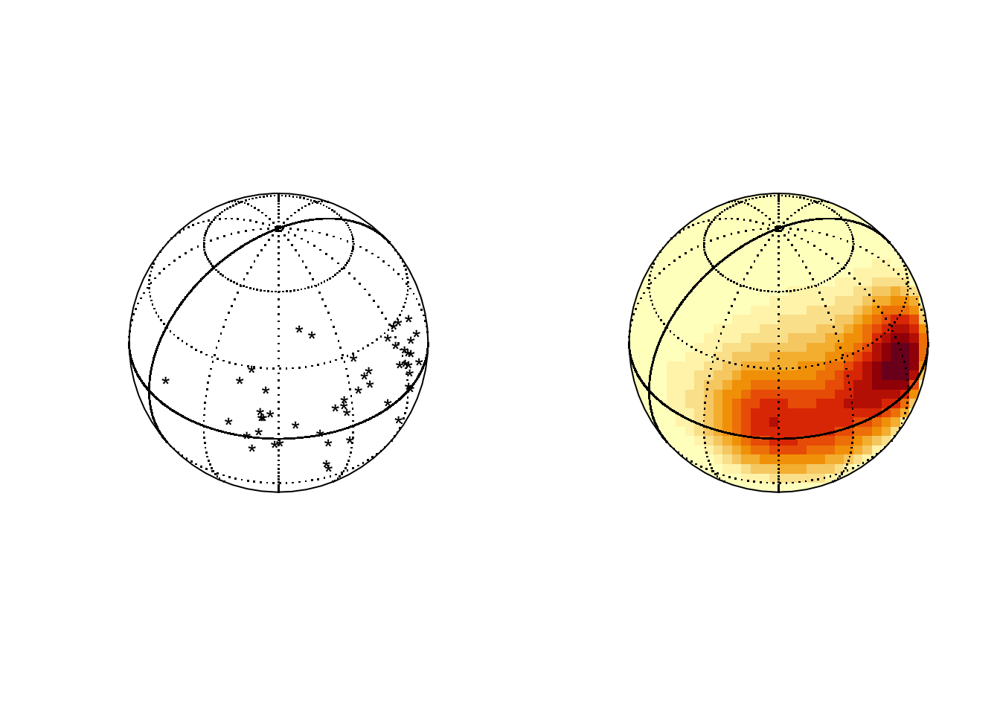

4 Data Visualisation
Graphs and summaries provide some of the most powerful tools available for dealing with data. A well chosen graph or summary can sometimes allow us to reach conclusions immediately, without the need for further, more complex analysis. When careful anaysis is required, graphs can assist in many other ways, for example by providing initial insight, checking assumptions and reporting results.
4.1 Graphics: a picture is worth a thousand words
You may recognise the image displayed below.

On this occasion the R code has not been displayed as the graphs are the basis of an exercise at the end of this chapter. The data are available at https://climate.nasa.gov/vital-signs/global-temperature/.
Here is a historical example from the early development of graphics. Florence Nightingale used graphics to excellent effect in portraying the different causes of mortality in the Crimean War. This had a significant effect on the subsequent management of disease.

There is plenty of scope for the imaginative construction of graphics. In the example below, geographer James Cheshire and designer Oliver Uberti have created a graphic which shows the number of migrants that acquired British nationality after spending a little while in the UK. Good use of colour, size, and the visual connection with the stamps used in passports combine to make the information readily accessible in an intuitive manner.

This form of infographics can be very powerful, although there is sometimes a danger that the beauty of the graphic takes precedence over communication of the content.
The focus here will be on what we might call statistical graphics - plots with standard forms of construction which aim to communicate as clearly and effectively as possible some aspects of what the data can tell us. There is particularly strong motivation for the good use of graphs.
- A picture is worth a thousand words. Most people are able to absorb information and identify pattern much more easily from a picture than from lists of numbers.
- Graphs are a good way to check data for unusual or problematic observations.
- If we go on to carry out a more formal analysis of the data, it is very useful to have some impression of what the answer is likely to be, as a check on our calculations. A graph can often communicate this.
- Graphs can often suggest the kind of model which will be appropriate for the data. They help us to think through the problem.
- Particular types of graph have been developed to allow us to check the assumptions which a model makes.
- A well chosen graph can also be the best way to communicate our results and conclusions.
A map is a very sophisticated graphical device. We have simply become used to seeing and interpreting them. The code below uses the leaflet package to create an interactive map. (You will also need to issue the library(tidyverse) instruction, if you have not already done that in the current session, in order to use the ‘pipes’.) There are multiple layers of information here, with points, symbols, text, lines, filled areas, colours and other features. That helpfully prepares the ground for the system to be introduced in the next section.
4.2 ggplot graphics
The native graphics functions in R are very useful for a variety of tasks. However, there is also a set of more general, powerful and systematic graphical tools known as the ggplot system, available in the ggplot2 package. This uses some attractive graphic design principles to create a style of plots which have become extremely popular. It also provides a framework and set of tools which allow complex plots to be built.
Near the end of the previous section a map was displayed and this provides a useful analogy. Our familiarity with maps masks the fact that they encode a large amount of information in a sophisticated manner. There are different symbols (points, text, other symbols), lines, filled areas, colours and shading, with informative keys and legends. These are built up in layers to create the final product. ggplot operates in a somewhat similar manner, constructing the final plot in successive layers.
4.2.1 The basics
Hans Rosling became famous for the talks he gave which challenged our views of the world, using publicly available data on health, society and the environment. You might like to view his highly entertaining TED talk. In honour of his highly influential work, the next illustration will reproduce the example given in this talk, but using updated data.
An exercise at the end of Chapter 3 involves the collation of data from various UN websites into a demog dataframe. In case you haven’t tried this exercise yet, this can be done for us conveniently through the rp.wrangle function from the rpanel package. To keep things simple at the moment, we will filter out the dat for the year 1950, using the filter function from the dplyr package discussed in Chapter 3. This package and the ggplot2 package we are about to use can be made available through the single library(tidyverse) instruction.
The starting point is a call to the ggplot function. This specifies which dataframe we are using and the aes function within it sets the global aesthetics for the plot by specifying the variables to be used on the x and y axes. The left hand panel below shows the effect of this. The axes and labels are drawn but nothing is yet entered in the plot.
In the second expression below, the geom_point function is added. This specifies the geometry of the plot, in this case asking for points to be plotted. This is a very simple example of the manner in which the syntax of ggplot allows us to add multiple layers to build up the plot as we would like it.
ggplot(demog50, aes(Fertility, Life_Expectancy))
ggplot(demog50, aes(Fertility, Life_Expectancy)) + geom_point()
We can usefully add the country names by extending the aesthetics to include a label and changing the geometry of the plot to text.
Further setting on the aesthetics allow us to use colours to identify the continents and the size of the text to indicate the population. Notice that the legends for colour and size are added automatically.
ggplot(demog50, aes(Fertility, Life_Expectancy, label = Location,
col = Continent, size = Population)) +
geom_text()The names of small countries are rather difficult to read. Perhaps it may be better to revert to points but to use the geom_text_repel function from the ggrepel package to add names where there is space.
library(ggrepel)
ggplot(demog50, aes(Fertility, Life_Expectancy, label = Location,
col = Continent, size = Population)) +
geom_point() +
geom_text_repel(size = 3)
So, in ggplot we can set up the basic structure of the graph in aesthetics defined by the ggplot function and then a whole variety of different layers can be built on top of that. Complex plots can be created by adding multiple layers which give huge flexibility in the plot produced.
4.2.2 Facets
The challenge in constructing a good visualisation is to present as much information as is needed in a manner which is as clear as possible. What other devices might we use?
The demography data covers many years. it would be interesting to compare life expectancy and gdp in 1950 and 2020, seventy years apart. Indeed it was Hans Rosling’s aim to challenge our understanding of how things have changed over time. One way to do this would be to create a new dataframe containing these years only. That is done below through the filter function from the dplyr package. Note the use of the | symbol representing the or logical operator.
To compare the two years, we can use facets. This creates multiple (in this case two) plots with the same axes, with a different group of data in each facet. The common axes allow the different groups to be compared quite effectively.
4.2.3 Going deeper
The aim of this section has been to provide a gentle introduction to the ggplot2 package and give a broad overview of its approach. There are many other facilities available and, as the popularity of this approach to graphics has rapidly increased, numerous additional packages to extend the types of visualisations which can be produced. No attempt to give systematic coverage of the facilities and tools available will be attempted here. Examples of other facilities will be introduced as required in later examples. Graphics are better integrated with other parts of the analysis process.
A very useful resource is the cheat sheet available from the RStudio menu Help > Cheat Sheets > Data Visualization with ggplot2 and on the web in
html and
pdf forms. This summarises the basic form of ggplot constructions, common aesthetic values, the geometries available for different data structures, the statistical functions available to restructure data and the numerous tools for controlling scales, co-ordinate systems and many detailed aspects of the visualisation. Colour choice is a particularly interesting issue and Zeileis, Hornik, and Murrell (2009) give a very interesting discussion of this. A significant advantage of ggplot is that the system generally makes very good default choices which represent good practice, while allowing many other options.
Wickham (2009) provides definitive description of ggplot2 A third edition of the book is under development and the authors have generously made this available in web form. There are many other texts on data visualisation, many of them making use of ggplot2, and some of these are mentioned in the Further Reading section below.
4.3 What are we looking for?
In the Introduction to this book, the importance of keeping a clear focus on the problem we are tackling was emphasised. This remains true when we explore the data graphically. We should be guided by the questions we are asking. However, visualisation can also be helpful in basic data screening and sanity checks. This section will illustrate both of these approaches.
It will also briefly cover some of the standard methods of visualisations for simple forms of data. The focus will be on simple simple but commonly occurring problems:
- what is the pattern of variation in single groups of data?;
- how do different groups compare?;
- what is the relationship between different measurements?
At the same time, we need to be aware of the different scales of measurement with which we may be dealing. These include:
- continuous scales where, in principle, any value can be observed along a continuous numerical interval (although rounding to a practical level of accuracy may influence the recorded value);
- discrete scales where the values correspond to integers, usually describing a count;
- categorical scales where the recorded value simply indicates the group, out of a finite number of groups, into which the observation falls, for example a blood group; categorical scales are ordinal when the groups have a natural and meaningful ordering and nominal when they do not.
We will begin with the description of an interesting historical dataset which will be used to illustrate the issues and methods.
Example: Longevity and paternal age at birth
The biological process of ageing is the focus of a great deal of current research. In fact, this topic has a very long history and one of the earliest studies came from a surprising source. Alexander Graham Bell was a Scottish-born scientist and inventor who moved to North America where he played a crucial role in the development of the telephone and became a co-founder of the American Telephone and Telegraph Company (AT&T). His scientific interests were much wider than this and included some early work on heredity. As part of this, he organised meticulous records on the descendants of one of the early European settlers in the ‘New World’. This was William Hyde, who died in 1681 and whose descendants are documented in the “Genealogy of the Hyde Family,” by Reuben H. Walworth, LL. D. (1864). A. G. Bell arranged for relevant dates to be extracted from which, among other things, the age of each father at a child’s birth and the subsequent age at death of the child could be calculated. He reported his findings on the dataset in general, and on the relationship between father’s age and child’s longevity in particular, in Bell (1918).The report on the analysis by Bell gives summary data and interpretation, with the raw data listed in Bell’s journal, the Beinn Bhreagh Recorder. This is held by the US Library of Congress who kindly gave access for the data to be transcribed. This information is provided in the
hydedataset, accessible through therp.datalinkfunction in therpanelpackage.
The datafile contains three columns. The first two give the age of the father and the age of the child. To provide a compact data representation, the third column gives the frequency of this particular age combination. Standard plotting functions generally expect each row to refer to an individual. We can easily expand the dataframe into this form, using the rep function. The code below creates an indicator variables ind which repeats each row number, as dictated by its frequency. The dataframe is then overwritten by its expanded form.
## Father Child Frequency
## 1 17 10 1
## 2 20 14 1
## 3 21 0 2
## 4 21 1 1
## 5 21 4 1
## 6 21 6 1## Father Child
## 1 17 10
## 2 20 14
## 3 21 0
## 3.1 21 0
## 4 21 1
## 5 21 44.3.1 Continuous scales
The key question which motivated the collection of the data is whether the age of the father is linked, on average, to the age of the child. Before exploring that question, it might be useful to inspect the pattern of ages for fathers and children separately.
Are these ages on a continuous or a discrete scale? The ages of the fathers are mostly between 20 and 60 while the ages of the children are mostly between 0 and 100. Although the ages are rounded to a whole number of years, the resolution on the axes is fairly high, with a large number of distinct, evenly-spaced values. It would therefore be reasonable to treat this as a continuous scale. Measurements on any continuous scale can only be recorded to some specific degree of accuracy.
For data on a continuous scale, a histogram, where we display the frequency of data in grouped form, is an obvious method of data visualisation. The two upper panels in the figure below show the observations along the years scale with some random jittering and the use of transparency to reduce the problem of overplotting and allow individual observations to be seen. Construction of a histogram involves splitting the axis into intervals or bins, as illustrated by the grid of blue lines, and recording the frequency of observations in each bin. The number of intervals can be altered to allow us to view the underlying pattern in the distribution at different scales. A histogram can be produced by instructions of the form
ggplot(hyde, aes(Father)) + geom_histogram()although the panels below have been further annotated to illustrate the method of construction.
A striking feature of these histograms is the very high level of childhood mortality.
The bottom row of the figure above shows another common form of display for samples of data on a continuous scale, namely the boxplot. This is based on a summary of each set of data. The median of a sample is the value which has half of the observations below and half of the observations above. (If the number of data points in the sample is odd this will be the middle observation. If the number of data points is even, it is defined as the average of the middle two observations.) Reapplying this thinking to the lower and upper half of the dataset produces the lower and upper quartiles as the middle points of each half. The median and quartiles give a useful summary of the location and spread (distance of the quartiles from the median) of the sample of data. Two further summary numbers are usually added. These could be the extremes (largest and smallest observations) or other values indicating where the ‘tails’ of the sample lie. (There are various algorithms for this latter approach but the details are not crucial here. This allows a small number of unusually large or small data points to be identified separately.) This summary is turned into graphical form through a box whose edges lie at the quartiles, with a central line marking the median and a horizontal line marking the ‘extent’ of the data points. Boxplots can be produced by instructions of the form
ggplot(hyde, aes(Father)) + geom_boxplot()In the panels above the layer scale_y_discrete() has been added to remove the vertical scale which, for a single group of data is not relevant.
Useful as this is, a summary based on such a small number of sample characteristics cannot capture much detail. In this case the skewness of the distribution of father’s age is expressed through the median being positioned closer to the lower quartile than the upper quartile, but the clustering of observations due to child mortality is completely missed.
It is the relationship between father’s age and child’s longevity which is of interest, so a scatterplot of these two variables in the left hand plot below gives an initial impression. At any father’s age, there is huge variation in the child’s longevity so there is little indication of any underlying relationship. However, one unusual feature is apparent, with a vertical gap at father’s age 36 in an otherwise dense plot. Review of the transcription of the data brought to light that a group of observations has been mistakenly tagged with father’s age 35 when this should have been 36. Correction of this transcription error produces the right hand scatterplot, where the anomalous gap has disappeared. This is a simple example of another of the useful roles of data visualisation, namely data screening.
The high rate of child mortality is again apparent, now in the cluster of observations near the horizontal axis. In addition to the normal process of adult ageing there is a heightened challenge, relative to modern standards, to reach maturity. It may be helpful to separate these two effects by examining any relationship between father’s age and:
- the proportion of children who survive childhood;
- longevity for those who survive childhood;
- age of death for those who do not survive childhood.
The definition of ‘surviving childhood’ needs some thought. For current exploratory purposes, a suitable criterion would be to reach age 10 as this broadly corresponds to a ‘thinning’ of the data at this point on the vertical scale.
In order to explore whether there is evidence of a link between father’s age and child’s longevity, Alexander Graham Bell reported the mean child longevity for different groups of father’s age. We will do the same, but apply this to to those who survived childhood rather than to the whole dataset. We begin by adding Father_age_group to the hyde datasetfiltering out the cases where childhood was survivied. The fact that the dplyr package works with the enhanced form of dataframe called a tibble now helps, as this allows the group_by function to summarise child longevity by sample mean and sample standard deviation across the father’s age groups. The mean of the father’s ages in each group is also calculated. The mean of a group of observations can be thought of as its ‘centre of gravity’ if each observation corresponds to a weight resting at that point on the axis. It therefore summarises location of the sample. The sample standard deviation measures how far the observations are from the sample mean, on average, using squared distance to do so but putting this back on the original scale by taking the square root of the result. This therefore summarises the spread of the sample.
hyde <- mutate(hyde,
Father_age_group = cut(Father, breaks = c(0, 25, 35, 45, 100)))
hyde_10 <- filter(hyde, Child >= 10)
hyde_10_means <- hyde_10 %>%
group_by(Father_age_group) %>%
summarise(mean = mean(Child), sd = sd(Child), age = mean(Father))
hyde_10_means## # A tibble: 4 × 4
## Father_age_group mean sd age
## <fct> <dbl> <dbl> <dbl>
## 1 (0,25] 51.1 22.0 23.6
## 2 (25,35] 48.2 22.3 30.5
## 3 (35,45] 46.8 22.0 39.8
## 4 (45,100] 46.2 22.8 49.7We can now look for a trend in child longevity against father’s age by adding sample means to the scatterplot, for those cases where the child survived at least until age 10. This shows a small but steady decline in the mean child longevity as father’s age increases. This simple but effective form of insight, employed by Alexander Graham Bell on the full dataset, is regarded as the first indication of a link between the age of the father and the longevity of the child. The effect is small, so this is about understanding the underlying connection between these variables. It is certainly not feasible to predict the longevity of individual children from the father’s age!
At this stage, we are still dealing with descriptions of the data. We will have to defer the business of weighing evidence for change more carefully until we have the inferential tools introduced in Chapter 6.
# Notice that the second instance of geom_point replaces the default `data`
# with the hyde_10_means dataset and the appropriate `aes`.
filter(hyde, Child >= 10) %>%
ggplot(aes(Father, Child)) + geom_point() +
geom_point(aes(age, mean), data = hyde_10_means, size = 5, col = "red") +
geom_vline(xintercept = c(25, 35, 45), col = "red", linetype = 2)We will revisit this dataset in later chapters but, for the moment, we can complete the informal investigation of trend by using medians rather than means. In fact, the simplest way to do this is to display boxplots. This tells a similar story.
Summary
For groups of data on a single variable on a continuous scale, the histogram is a very useful method of visualisation. Features to look out for include:
- unimodal or multimodal shape;
- symmetry or skewness;
- outliers (unusual observations);
- rounding (where observations cluster at particular values, possibly indicating a simplification in the recorded values; we did not see this in the
hydedata.).
Boxplots are based on summaries which can be helpful when comparing location, scale and skewness across multiple groups but features such as multimodality are hidden.
Dotcharts and stripcharts (not discussed here) are useful displays when the samples sizes are small.
Helpful numerical summaries of samples of measurements on a continuous scale are:
- sample means and standard deviations;
- sample medians and quartiles (and indeed other percentiles).
4.3.2 Discrete scales
Ages are on a continuous scale although they are recorded to some level of accuracy. When we look at infant mortality this is less reasonable. We should view the data on a discrete scale. A barplot is then the natural display.
Mean values make sense because a discrete scale is numerically meaningful. There doesn’t seem to be an interpretable systematic shift with Father’s age.
hyde_10 <- filter(hyde, Child < 10)
hyde_means_10 <- hyde_10 %>%
group_by(Father_age_group) %>%
summarise(mean = mean(Child))
ggplot(hyde_10, aes(Child)) + geom_bar() +
facet_wrap(~ Father_age_group) +
geom_vline(aes(xintercept = mean), hyde_means_10, col = "red") +
scale_x_continuous("Infant age", breaks = 0:9)
# The 'scale_x_continuous' function allows the axis ticks and label to be specified.As we are dealing with counts and the number of categories is modest for both child age and father’s age group, an interesting alternative display is a mosaicplot. This uses blocks whose areas are proportional to the count in each cell of the cross-classification. Here the width of each column of blocks represents the differences in the numbers of observations in the Father’s age categories, while the positions of the breaks between the vertical blocks correspond to the proportions of child ages within each column. This is a very neat way of representing the information in the table in an interpretable manner.
tbl <- table(Father = hyde_10$Father_age_group, Child = hyde_10$Child)
mosaicplot(tbl, main = "")
# chisq.test(tbl)
4.3.3 Categorical data
When we have more than two factors or grouping variables a contingency table is a useful way of presenting the data. The table of father and child ages shown above, for children who died before 10 years, is an example. As a further example, we can consider whether the incidence of infant mortality, irrespective of particular age of death, changes with paternal age. This is the missing part of our analysis, which so far has only considered the patterns within the infant and adult death groups.
The mosaicplot below suggests that the proportion of infant deaths may be rising slightly with father’s age.
hyde <- mutate(hyde, infant_mortality = factor(Child < 10))
tbl <- table("Father's age" = hyde$Father_age_group, "Infant mortality" = hyde$infant_mortality)
mosaicplot(tbl, main = "")The ggmosaic package allows mosaicplots to be produced within the ggplot2 framework.
4.4 Gaining an overview of datasets
Before starting serious analysis of any dataset, it is helpful to ‘screen’ the data by checking some basic features. For example, we might check the scales of measurement used, view the broad patterns of variation exhibited by individual variables, look out for unusual observations and so on. This is a kind of ‘sanity check’ which can highlight issues we may need to consider.
As an example, we will use data on herring gulls, as discussed in Section 1.1. (If you haven’t yet tried the data collection activity there, do go back and have a go.) Several measurements are available on each gull and the aim is to investigate whether these measurements can be used to classify birds as male or femal, as sex cannot easily be determined by inspection of the bird’s anatomy.
The dataset is hidden in the rpanel package, but we can retrieve it through the system.file command. Note the use of the stringsAsFactors argument of read.table which will ensure that any character variables are interpreted as factors. To improve the layout of results, a rather long variable name has also been slightly shortened.
path <- system.file("extdata/gulls.txt", package = "rpanel")
gulls <- read.table(path, stringsAsFactors = TRUE)
library(tidyverse)
gulls <- rename(gulls, Head.Length = Head.and.Bill.Length)How should we inspect this dataset? A first step might be to produce helpful summaries of each individual variable. The function summary is very useful as it adapts its output to the type of object it is passed, in this case a dataframe.
## Weight Wing.Length Bill.Depth Head.Length Sex
## Min. : 705.0 Min. :395.0 Min. :15.70 Min. :103.0 Female:210
## 1st Qu.: 860.0 1st Qu.:408.0 1st Qu.:17.50 1st Qu.:115.0 Male :153
## Median : 920.0 Median :417.0 Median :18.20 Median :119.0
## Mean : 948.1 Mean :418.6 Mean :18.41 Mean :119.6
## 3rd Qu.:1042.5 3rd Qu.:429.0 3rd Qu.:19.30 3rd Qu.:125.0
## Max. :1250.0 Max. :457.0 Max. :22.50 Max. :136.0This provides a useful description of each variable, with quantiles for those on continuous scales and tabulations for factors. An alternative is the skim function from the skimr package which gives a little more information, provides some flexibility and fits neatly with the tidyverse. Here we improve the layout by omitting the complete_rate, as there are no missing data. The small histograms provide a neat graphical summary of the shape of the variability in each variable.
## ── Data Summary ────────────────────────
## Values
## Name gulls
## Number of rows 363
## Number of columns 5
## _______________________
## Column type frequency:
## factor 1
## numeric 4
## ________________________
## Group variables None
##
## ── Variable type: factor ───────────────────────────────────────────────────────
## skim_variable n_missing ordered n_unique top_counts
## 1 Sex 0 FALSE 2 Fem: 210, Mal: 153
##
## ── Variable type: numeric ──────────────────────────────────────────────────────
## skim_variable n_missing mean sd p0 p25 p50 p75 p100 hist
## 1 Weight 0 948. 118. 705 860 920 1042. 1250 ▂▇▅▃▁
## 2 Wing.Length 0 419. 13.1 395 408 417 429 457 ▆▇▇▃▁
## 3 Bill.Depth 0 18.4 1.19 15.7 17.5 18.2 19.3 22.5 ▂▇▆▂▁
## 4 Head.Length 0 120. 6.50 103 115 119 125 136 ▁▇▅▆▁Even at this stage, we should be guided by the aim of the analysis, which in this case is to assess the possibility of identifying the sex of a bird from its measurements. We could adapt the call to skim by inserting the dplyr function group_by(Sex) before it in a pipeline to create separate summaries for males and females. However, we are also interested in maximising the use of graphical exploration. Boxplots for each variable, separated by Sex, provide a good overall visual summary.
gulls %>%
pivot_longer(cols = !Sex, names_to = "variable") %>%
ggplot(aes(value, Sex)) + geom_boxplot() +
facet_grid(. ~ variable, scales = 'free')
It is also helpful to gain an overview of the relationships between the variables. The ggpairs function in the GGally package can help with this. It provides a set of plots which incorporate a great deal of information in graphical form. As ever, there are various arguments we can use to control the details. Here colour is used to identify males and females. The stars argument is also used to suppress some information which is not relevant to us at this stage.
library(GGally)
ggpairs(gulls, aes(col = Sex, alpha = 0.7),
upper = list(continuous = wrap(ggally_cor, stars = FALSE)))The idea is to create a set of panels which plot each variable against every other one. The type of plot in each panel adapts to the nature of the variables involved. When both variables are on continuous scales, the relationship is summarised by correlation coefficients in the upper part of the matrix. The boxplots and histograms in the margins indicate that the separation of males and females on each individual variable is strong, which offers encouragement that effective classification may be possible.
These methods work well when the number of variables is small or modest. Large numbers of variables could be handled in appropriately chosen groups of variables, or by employing methods of dimension reduction, for example principal components.
4.5 Plots for more complex data structures
The types of plots discussed so far are very useful when data lie on standard scales, in one or two dimensions. The structure of data can be more complex, with the need to use graphical methods which adapt to the underlying characteristics. This section gives some examples.
4.5.1 3D data
Plots of the gulls data included scatterplots of pairs of measurements, coloured by Sex, which suggested that classification of males and females from these measurements looks feasible. It is possible to explore this further in three dimensions. The rgl package provides a connection to the OpenGL
system for displaying three-dimensional objects. The rp.plot3d function from the rpanel package provides a means of creating a 3d scatterplot. The mouse can be used to rotate and zoom the display. (A plot of this type is also available from the plot3d function in rgl.)
Notice that the call to the rp.plot3d function is placed inside a with statement. This is a convenient way of allowing access to the variables inside the gulls dataframe, avoiding the need to use references such as gulls$Weight.
gulls <- mutate(gulls, clr = case_match(Sex, 'Male' ~ 'green', 'Female' ~ 'blue'))
with(gulls, rp.plot3d(Weight, Wing.Length, Head.Length, col = clr))
rgl::rglwidget()
This shows almost complete separation between males and females in these three measurements, although if you examine the plot carefully you will see three females with large values and one male with very small values. Perhaps these birds have been wrongly labelled - or perhaps they are simply very large/small for their sex.
4.5.2 Circular, spherical and compositional data
Spherical data sits on the surface of a sphere. Latitude and longitude positions of locations on the surface of the earth are a simple example.
## Package 'sm', version 2.2-6.0: type help(sm) for summary informationlat <- rnorm(50, 10, 15)
long <- c(rnorm(25, 300, 15), rnorm(25, 240, 15))
par(mfrow=c(1,2))
sm.sphere(lat, long)
sm.sphere(lat, long, sphim=TRUE, kappa=15)
par(mfrow=c(1,1))
Compositional data consists of vectors of proportions (or percentages) which sum to 1 (or 100). The special issues in analysing this kind of data are discussed by Aitchison (1982). In the special case of three proportions a plot called a ternary diagram can be created, using the special properties of the equilateral triangle. The ggtern package allows this kind of plot to be created in the style of ggplot. Here the percentages of different chemical compositions in lava samples from Skye are displayed, along with the contours of a density estimate.
library(ggtern)
data(SkyeLava)
ggtern(SkyeLava, aes(F, A, M)) +
geom_point() +
geom_density_tern() +
theme_showarrows()
Other packages include compositions and Compositional.
See Van den Boogaart and Tolosana-Delgado (2013) for more details of the theory.
4.6 Going further
Young, Valero-Mora, and Friendly (2011)
Michael Friendly and Wainer (2021)
M. Friendly (n.d.)
Chambers et al. (2018)
Gelman, Pasarica, and Dodhia (2002)
Gordon and Finch (2015)
Wickham book on ggplot2 first/second edition. The third edition is available at https://ggplot2-book.org.
Unwin (2018) places the emphasis on graphics for exploration, with discussion of what kind of graphics to draw for different types of data and with numerous examples of the process of exploration with different datasets.
New angony Unwin book at: https://eur03.safelinks.protection.outlook.com/?url=https%3A%2F%2Fbookdown.org%2Faatcosada%2FGmooG-book2%2F&data=05%7C02%7CAdrian.Bowman%40glasgow.ac.uk%7Cf88542b57a8042bb416e08dcf2be2c74%7C6e725c29763a4f5081f22e254f0133c8%7C1%7C0%7C638652145808818739%7CUnknown%7CTWFpbGZsb3d8eyJWIjoiMC4wLjAwMDAiLCJQIjoiV2luMzIiLCJBTiI6Ik1haWwiLCJXVCI6Mn0%3D%7C0%7C%7C%7C&sdata=mmYZVHa6xUKzp4ivdIi%2B3rif0Fh1UI%2BPZQdWpOEr62s%3D&reserved=0 with code at: https://github.com/antonr4/GmooGkodes
Rahlf (2019) focusses more on presentation graphics, including topics less commonly discussed such as layout and fonts, with much of the book devoted to detailed examples of the construction of specific graphs for specific datasets.
Grant (2018)
Edward Tufte book: Beautiful Evidence
Exploratory Data Analysis with R: Roger Peng (web)
ggplot2 essentials for great data visualisation in R. Kassambarra. https://www.datanovia.com/en/product/ggplot2-essentials-for-great-data-visualization-in-r/
Robert Grant: Data Visualization: charts, maps and interactive graphics
https://flowingdata.com/2015/09/23/years-you-have-left-to-live-probably/
https://pudding.cool/2018/10/city_3d/
https://www.babynamewizard.com/voyager#prefix=&sw=both&exact=false
https://www.visualisingdata.com
https://www. nytimes.com/interactive/2018/us/2018-year-in-graphics.html
Articles about graphics by Antony Unwin: https://hdsr.mitpress.mit.edu/pub/zok97i7p
R Shiny!
4.7 Exercises
4.7.1 Rodent mass and speed
The rodent data were introduced in Section 2.2. Use ggplot to produce the plots which were created there. To plot the fitted regression lines, you may wish to use a geom_smooth(method = 'lm') layer. A col argument can also be passed to this layer to control the colour of the line.
4.7.2 UK covid-19 deaths
The UK data on covid-19 deaths was introduced and plotted in Section 3.1. Use ggplot to create the graph. To join the observations with lines, use geom_line instead of geom_point. (Notice that ggplot automatically point the points in the correct date order.)
It would be instructive to see the deaths in different Age categories. A suitable subset of the data is created by changing Age == "All" to Age != "All". Use the colour aesthetic to separate the age groups.
Repeat this with Sex.
Experiment with facets to display age and sex groups simultaneously.
4.7.3 Scottish referendum
For a plot of the proportion voting no against the unemployment rate, we may decide that it is better simply to plot points rather than text, with the areas of the points adjusted to reflect the numbers of people who voted in the different Council regions. The code use in Section 4.2 will remind you how to do this. What does this plot tell you?
4.7.4 Centenarians in Scotland
What are the population age trends in Scotland? Data from the National Records of Scotland are available in the dataset
centenarians, which can be access in the usual way through the rp.datalink function. The variables are:
| Region | the administrative region of Scotland |
| Males | the total number of males of all ages in 2014 |
| Males90 | the number of males over 90 years of age in 2014 |
| Males100 | the number of males over 100 years of age in 2014 |
| Females | the total number of females of all ages in 2014 |
| Females90 | the number of females over 90 years of age in 2014 |
| Females100 | the number of females over 100 years of age in 2014 |
| Males90y2004 | the number of males over 90 years of age in 2004 |
| Females90y2004 | the number of females over 90 years of age in 2004 |
Explore the data in any way you see fit, in order to highlight recent trends. Here are some questions which might guide you.
- Is there a consistent pattern in the numbers of males and females over 90 years of age in 2014? Is the ratio of males to females similar across the regions?
- Repeat this for those over 100 years of age.
- Repeat this for those over 90 years of age using the data from 2004.
4.7.5 Flour beetles
The flour_beetles dataframe, which is provided by the rpanel package, records the number of insects which lived and died when groups were exposed to a variety of toxins at different concentrations. Some background information is available in the help file (?flour_beetles). Use ggplot to show the relationships between the proportions killed and the concentrations, using facets to separate the toxins and colour to identify the replicates.
The concentration levels of the toxins are rather different, so this is a case where we would like the x-axis in each facet to fit the range of the data for that facet. Consult the scales argument of facet_wrap to see how you might do this.
4.7.6 Clyde Estuary water quality
The Scottish Environment Protection Agency has monitored the water quality of the river Clyde by taking measurements of dissolved oxygen (DO) at a variety of locations on the river (Stations) over a long period (Year, Doy - day of the year). Measurements of Temperature and Salinity were also made.
A dataframe which contains these measurements is available in the file indicated below. When this file is loaded, the R object clyde dataframe will be placed into the workspace.
You can then click on the object clyde in the RStudio Environment pane to see its contents.
- Choose a particular station and use the
subsetorfilterfunctions create a dataframe which contains the data on this station only. To specify a particular value you will need the logical ‘equals’ operator. This is in the formStation == 6. Note the==with two ‘equals’ signs together. - For your chosen station, plot DO against the other variables: Year, Doy (day of the year), Temperature, Salinity. Comment on the relationships you see.
- Try this at another station some distance away. Are the relationships similar?
- Now go back to the full dataframe.
ggplotallows the creation of facets. This allows plots to be separated out by a grouping variable (factor). PlotDOagainstDoyseparately for eachStation. Notice that the facets argument is actually a formula. For a single variable such as Station you can create this by inserting the~character beforeStation.
4.7.7 Crabs (multivariate)
The crabs data is available in R in the MASS package. The dataframe contains various size measurements of each crab shell, as well as sex and colour form (blue or orange). Look at the help file for information on the variables. There are two questions of interest.
- Is there evidence from the size measurements alone of a division into two forms?
- Can we construct a rule to predict the sex of a future crab of unknown colour form? How accurate do we expect the rule to be? (The
ldafunction implements linear discriminant analysis.)
Here are a few hints which you might find useful.
- You may find that size is a dominant factor in the variation present in the data. You may be able to remove this effect by standardising the measurements against one particular measurement, for example by taking ratios.
- Don’t forget that a transformation of the scale may be helpful.
- The
pairsplot is useful in creating a matrix of all possible apirwise scatterplots. Aggplotvariation is also available in theGGallypackage. (Remember that you may need to install that if it is not already on your system.) - If you are familiar with the concept of principal components analysis (PCA), you may wish to use that to explore the data by creating new variables which capture as much of the variation in the data as possible. PCA is available in the function
princomp. - If you are familiar with the technique known as linear discriminant analysis then you may find the
ldafunction from theMASSpackage useful.
4.7.8 Topographic data
The quakes data, which is available in R, provides the locations in latitude, longitude and depth of seismic events in a region near Fiji. See the help file for details. Plot the data in any way you think fit in order to explore the geographical pattern of the locations of these events.
An alternative is to use the rgl package which allows rotatable 3-d plots to be created. (Remember that you may need to install this by install.packages("rgl").) The plot3d function should produce a rotable 3d scatterplot.
4.7.9 Global energy use
the Energy Institute, which is described as ‘the chartered professional membership body for people who work across the world of energy’, publishes detailed information on energy use across the world in the form of a Statistical Review. The raw data are available, including in particular an Excel spreadsheet with an overview of World Energy Data since 1965. A summary of primary energy consumption is in Sheet 2.
Use the data to provide visualisations of the trends in energy use over the range of years available in these spreadsheets.
If you wish to dig deeper, a spreadsheet of Consolidated Data provides information at a more detailed level.